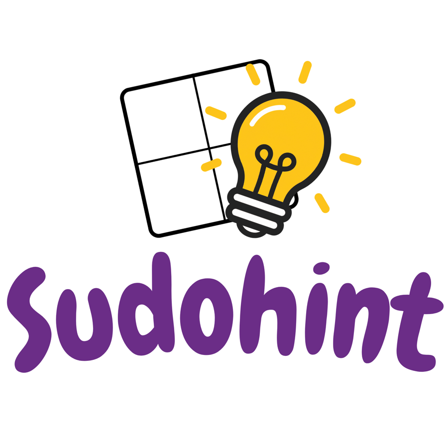
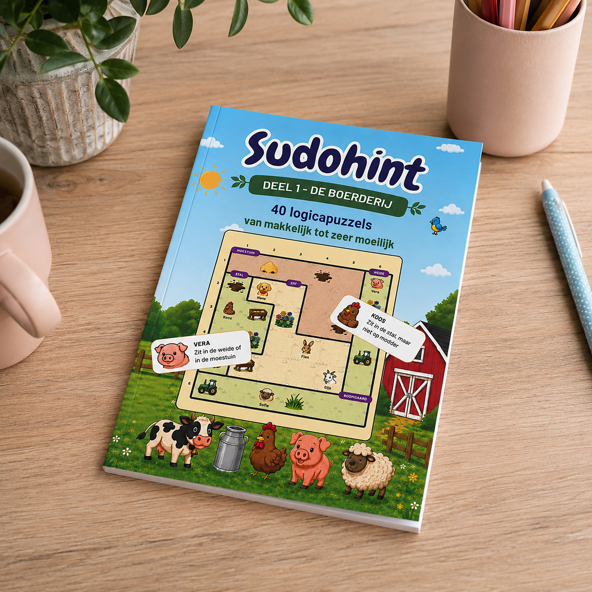
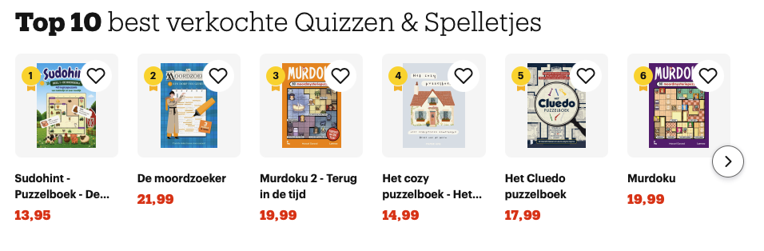
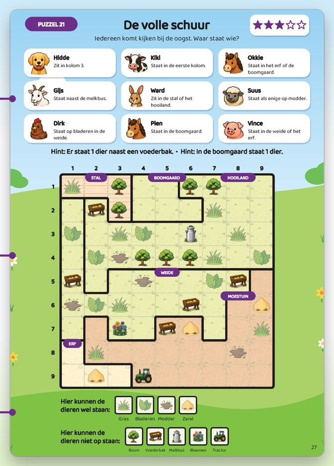
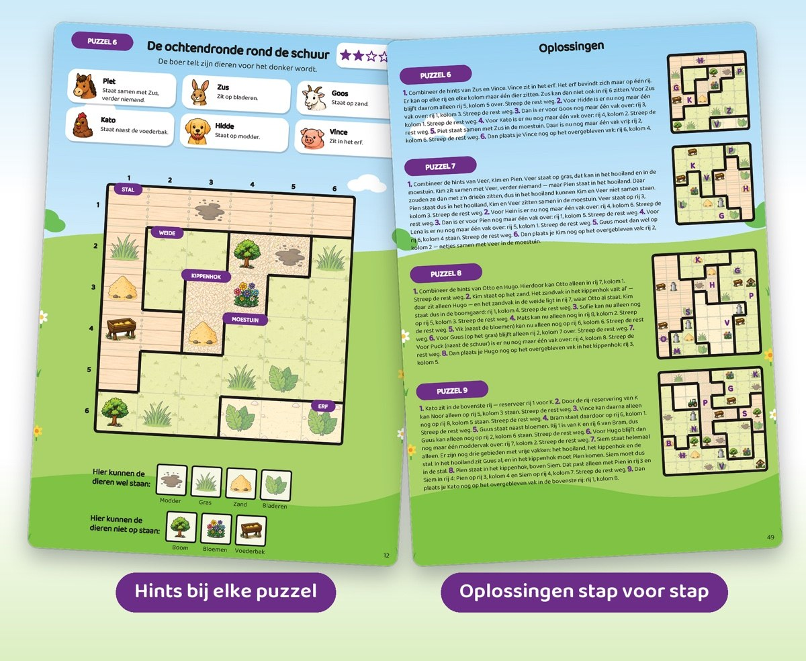

Bestel op bol.com →De dieren van de boerderij lopen kriskras door elkaar! Gelukkig krijg je bij elke puzzel hints: "Vera staat naast de schuur" en "Hugo zit op het gras." Denk slim na, streep weg en zet elk dier in het juiste vakje.
€ 13,95 · 2 voor € 25,00 · morgen in huis
★★★★★ Alleen maar 5-sterrenreviews op bol · Nr. 1 best verkochte Quizzen & Spelletjes · 1.000+ verkocht

Sinds de lancering in de zomer van 2026 is Sudohint een van de best verkochte puzzelboeken van bol.
verkocht sinds de lancering in de zomer van 2026
in de Top 10 best verkochte Quizzen & Spelletjes op bol
alleen maar 5-sterrenreviews op bol

Stand op bol, september 2026 · Lees de reviews op bol →
Sudohint is puzzelen zoals sudoku, maar dan met dieren, hints en een flinke dosis speurplezier.
Elke puzzel is een plattegrond van de boerderij. De hints vertellen je nooit rechtstreeks het antwoord, samen verraden ze alles.

Het boek loopt langzaam op, zodat iedereen meepuzzelt. De laatste puzzels zijn ook voor doorgewinterde puzzelaars een flinke kluif.
Kom je er even niet uit? Achterin staat elke puzzel stap voor stap uitgelegd, zodat je altijd verder kunt.

Sudohint deel 1, De Boerderij, is verkrijgbaar op bol. Vandaag besteld, morgen in huis.
Bestel op bol.com →€ 13,95 · 2 voor € 25,00
Dit is deel 1 van de Sudohint-serie. Welke dieren help jij in deel 2?